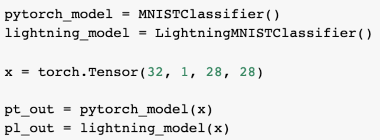
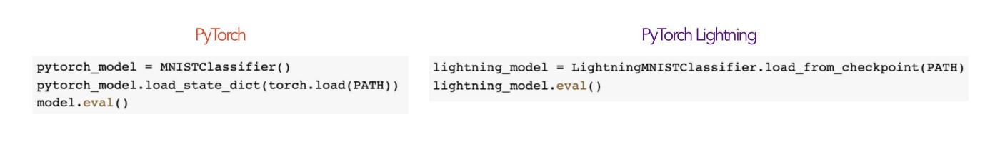
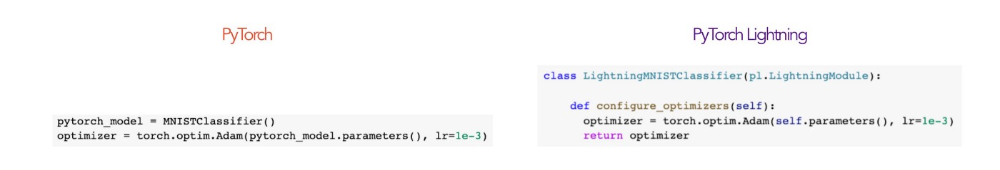
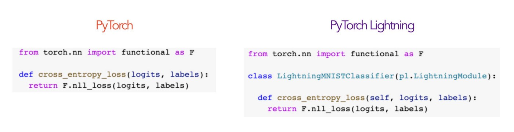
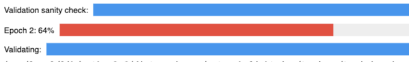
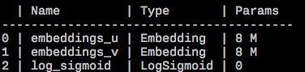
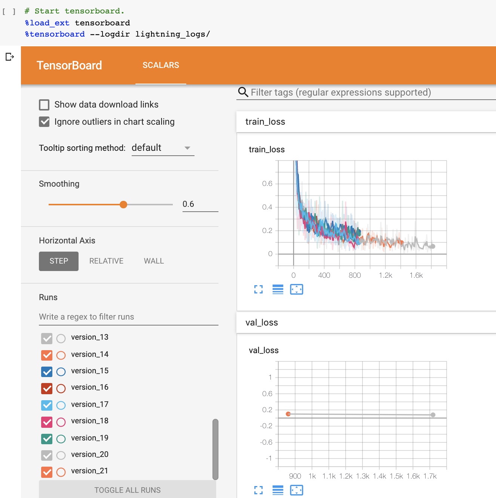
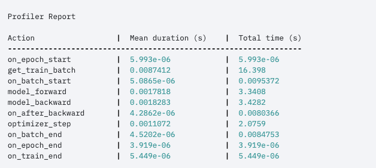

<!doctype html>
<html>

<head>
	<meta charset="utf-8">
	<meta name="viewport" content="width=device-width, initial-scale=1.0, maximum-scale=1.0, user-scalable=no">

	<title>Pytorch Lightning</title>

	<link rel="stylesheet" href="css/reset.css">
	<link rel="stylesheet" href="css/reveal.css">
	<link rel="stylesheet" href="css/theme/night.css">

	<!-- Theme used for syntax highlighting of code -->
	<link rel="stylesheet" href="lib/css/monokai.css">

	<!-- Printing and PDF exports -->
	<script>
		var link = document.createElement('link');
		link.rel = 'stylesheet';
		link.type = 'text/css';
		link.href = window.location.search.match(/print-pdf/gi) ? 'css/print/pdf.css' : 'css/print/paper.css';
		document.getElementsByTagName('head')[0].appendChild(link);
	</script>

	<!-- ruleJS -->
	<script async defer src="https://buttons.github.io/buttons.js"></script>
	<script src="plugin/spreadsheet/ruleJS.all.full.min.js"></script>
	<link rel="stylesheet" href="plugin/spreadsheet/spreadsheet.css">
</head>

<body>
	<div class="reveal">
		<div class="slides">
			<!--
			<section data-markdown data-background="images/pytorch-lightning/lightning.jpg" data-background-opacity="0.7" data-background-size="contain">
				<script type="text/template">
					## Pytorch Lightning简介

					2020 Jun
				</script>
			</section>
			<section data-markdown>
				<script type="text/template">
					### 那是个什么东西？
					> * The lightweight PyTorch wrapper
					> * Scale your models
					> * Write less boilerplate

					<p class="fragment">总之：帮我们更好更快的写bug</p>
				</script>
			</section>
			<section data-markdown>
				<script type="text/template">
					### 在pytorch-lightning之前

					* [fastai](https://www.fast.ai/)
					* [ignite](https://pytorch.org/ignite)

					<p class="fragment">侵入性比较强，需要再学习一套api</p>
				</script>
			</section>
			<section data-markdown>
				<script type="text/template">
					```shell
					pip install pytorch-lightning
					# or
					conda install pytorch-lightning -c conda-forge
					```
				</script>
			</section>
			<section data-markdown data-background="images/pytorch-lightning/model.png" data-background-size="contain">
				<script type="text/template">
				</script>
			</section>
			<section data-markdown>
				<script type="text/template">
					### prediction
					
				</script>
			</section>
			<section data-markdown>
				<script type="text/template">
					### pre-trained
					
				</script>
			</section>
			<section data-markdown data-background="images/pytorch-lightning/dataloader.jpeg" data-background-size="contain">
				<script type="text/template">
				</script>
			</section>
			<section data-markdown>
				<script type="text/template">
					### optimizer
					
				</script>
			</section>
			<section data-markdown>
				<script type="text/template">
					### loss
					
				</script>
			</section>
			<section data-markdown data-background="images/pytorch-lightning/train.jpeg" data-background-size="contain">
				<script type="text/template">
				</script>
			</section>
			<section data-markdown>
				<script type="text/template">
					### 体外的dataloader
					```python
					dataset = ....
					train_dataloader = DataLoader(
						dataset, 
						batch_size=batch_size, 
						num_workers=num_workers
					)
					trainer.fit(model, train_dataloader=train_dataloader)

					# or
					val_dataloader = ...
					trainer.fit(
						model, 
						train_dataloader=train_dataloader, 
						val_dataloader=val_dataloader
					)
					```
				</script>
			</section>
			<section data-markdown>
				<script type="text/template">
					### prepare_data
					
					* 下载
					* 预处理 (transform, split, ...)

					<p class="fragment">如果使用多个GPU，会保证只被执行一次</p>
				</script>
			</section>
			<section data-markdown>
				<script type="text/template">
					### train_dataloader, val_dataloader, test_dataloader
					<p class="fragment">如果使用多个GPU，会保证只被执行一次</p>
				</script>
			</section>
			<section data-markdown>
				<script type="text/template">
					### 开箱即得 - 进度条
					
				</script>
			</section>
			<section data-markdown>
				<script type="text/template">
					### 开箱即得 - weights summary
					
				</script>
			</section>
			<section data-markdown>
				<script type="text/template">
					### 开箱即得 - tensorboard
					
				</script>
			</section>
			<section data-markdown>
				<script type="text/template">
					### 开箱即得 - 其他可视化
					
					* [MLFlow](https://mlflow.org/)
					* [Neptune.ai](https://neptune.ai/)
					* [Comet.ml](https://www.comet.ml/site/)
					* [Wandb](https://www.wandb.com/)
					* [Trains](https://github.com/allegroai/trains)
				</script>
			</section>
			<section data-markdown>
				<script type="text/template">
					### 开箱即得 - fp16
					```python
					trainer = Trainer(precision=16)
					
					trainer = Trainer(amp_level='O1')
					```
				</script>
			</section>
			<section data-markdown>
				<script type="text/template">
					### 开箱即得 - profiler
					```python
					trainer = Trainer(profiler=True)
					```
					
				</script>
			</section>
			<section data-markdown>
				<script type="text/template">
					### 开箱即得 - 多GPU
					```python
					trainer = Trainer(gpus=[1,2])
					trainer = Trainer(gpus='1,2')
					trainer = Trainer(gpus=-1)     # all
					```
				</script>
			</section>
			<section data-markdown>
				<script type="text/template">
					### 开箱即得 - Checkpoint saving
					```python
					trainer = Trainer(default_root_dir='/path/to/checkpoints')

					from pytorch_lightning.callbacks import ModelCheckpoint
					# DEFAULTS used by the Trainer
					checkpoint_callback = ModelCheckpoint(
						filepath=os.getcwd(),
						save_top_k=True,
						verbose=True,
						monitor='val_loss',
						mode='min',
						prefix=''
					)
					trainer = Trainer(checkpoint_callback=checkpoint_callback)

					trainer = Trainer(checkpoint_callback=False)  # disable 

					# manual
					model = MyLightningModule(hparams)
					trainer.fit(model)
					trainer.save_checkpoint("example.ckpt")
					new_model = MyModel.load_from_checkpoint(checkpoint_path="example.ckpt")
					```
				</script>
			</section>
			<section data-markdown>
				<script type="text/template">
					### 开箱即得
					* Trainer(fast_dev_run=True)
					* Trainer(limit_train_batches=0.1, limit_val_batches=0.01)
					* Trainer(overfit_batches=0.01)
					* Early stopping
					* hyperparameter
					* Auto scaling of batch size ('power', 'binsearch')
					* 分布式（跨机器）
					* TPU
					* ...
				</script>
			</section>
			-->
			<section>
				<section data-markdown>
					<script type="text/template">
						### Namespace
						
						from argparse import ArgumentParser
					</script>
				</section>
				<section data-markdown>
					<script type="text/template">
						```python
						parser = ArgumentParser()
						parser.add_argument('--layer_1_dim', type=int, default=128)
						args = parser.parse_args()
						```

						```shell
						python trainer.py --layer_1_dim 64
						```
					</script>
				</section>
				<section data-markdown>
					<script type="text/template">
						```python
						class YourModel(LightningModule):
							@staticmethod
							def add_model_specific_args(parent_parser):
								parser = ArgumentParser(parents=[parent_parser], add_help=False)
								parser.add_argument('--encoder_layers', type=int, default=12)
								parser.add_argument('--data_path', type=str, default='/some/path')
								return parser

						# trainer.py
						parser = ArgumentParser()
						parser.add_argument('--conda_env', type=str, default='some_name')
						parser.add_argument('--notification_email', type=str, default='will@email.com')
						
						# add model specific args
						parser = YourModel.add_model_specific_args(parser)

						# add all the available trainer options to argparse
						parser = Trainer.add_argparse_args(parser)

						args = parser.parse_args()
						```
					</script>
				</section>
				<section data-markdown>
					<script type="text/template">
						```python
						# init the trainer like this
						trainer = Trainer.from_argparse_args(args, early_stopping_callback=...)

						# init the model with Namespace directly
						model = YourModel(args)
						```
					</script>
				</section>
			</section>
			
			<section data-markdown>
				<script type="text/template">
					### dataloader
				</script>
			</section>
			<section data-markdown>
				<script type="text/template">
					### 就这了...
				</script>
			</section>
		</div>
	</div>

	<script src="js/reveal.js"></script>

	<script>
		// More info about config & dependencies:
		// - https://github.com/hakimel/reveal.js#configuration
		// - https://github.com/hakimel/reveal.js#dependencies
		Reveal.initialize({
			math: {
				mathjax: 'https://cdnjs.cloudflare.com/ajax/libs/mathjax/2.7.0/MathJax.js',
				config: 'TeX-AMS_HTML-full', // See http://docs.mathjax.org/en/latest/config-files.html
			},
			menu: { // Menu works best with font-awesome installed: sudo apt-get install fonts-font-awesome
				themes: false,
				transitions: false,
				markers: false,
				hideMissingTitles: true,
				keyboard: true,
			},
			sequencediagrams: {
				theme: "simple",
				useFragments: true,
				initialize: (function (diagramContainer) {
					console.log("Diagram rendered!");
				})
			},
			chalkboard: { // font-awesome.min.css must be available
				// src: "plugin/chalkboard/chalkboard.json",
				src: null,
				toggleChalkboardButton: {
					left: "80px"
				},
				toggleNotesButton: {
					left: "130px"
				},
			},
			keyboard: {
				67: function () {
					RevealChalkboard.toggleNotesCanvas()
				}, // toggle chalkboard when 'c' is pressed
				66: function () {
					RevealChalkboard.toggleChalkboard()
				}, // toggle chalkboard when 'b' is pressed
				46: function () {
					RevealChalkboard.clear()
				}, // clear chalkboard when 'DEL' is pressed
				8: function () {
					RevealChalkboard.reset()
				}, // reset all chalkboard data when 'BACKSPACE' is pressed
			},
			dependencies: [{
					src: 'plugin/markdown/marked.js'
				},
				{
					src: 'plugin/markdown/markdown.js'
				},
				{
					src: 'plugin/notes/notes.js',
					async: true
				},
				{
					src: 'plugin/math/math.js',
					async: true
				},
				{
					src: 'plugin/highlight/highlight.js',
					async: true,
					callback: function () {
						hljs.initHighlightingOnLoad();
					}
				},
				{
					src: 'plugin/sequence-diagrams/webfont.js'
				},
				{
					src: 'plugin/sequence-diagrams/snap.svg-min.js'
				},
				{
					src: 'plugin/sequence-diagrams/underscore-min.js'
				},
				{
					src: 'plugin/sequence-diagrams/sequence-diagram-min.js'
				},
				{
					src: 'plugin/sequence-diagrams/sequence-diagrams-plugin.js'
				},
				{
					src: 'plugin/zoom-js/zoom.js',
					async: true
				},
				{
					src: 'plugin/spreadsheet/spreadsheet.js'
				},
				{
					src: 'plugin/menu/menu.js'
				},
				{
					src: 'plugin/chalkboard/chalkboard.js'
				},
			]
		});
	</script>
</body>

</html>